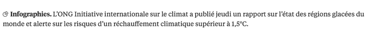
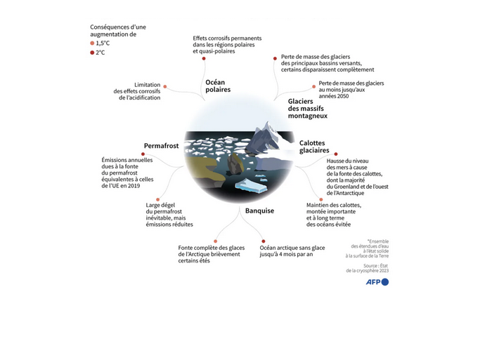
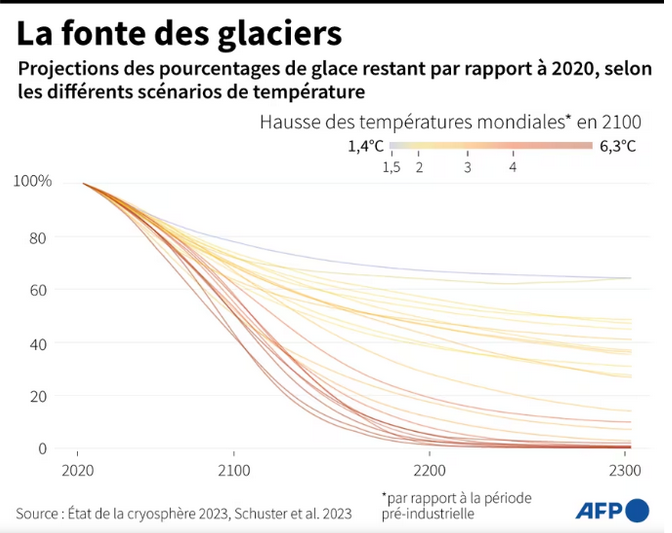
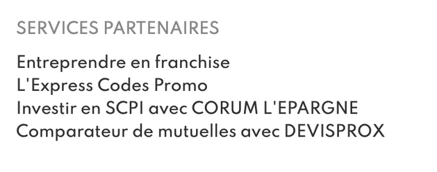

La recherche d’information sur internet n’est pas aussi simple que cela puisse le paraître. En effet ces dernières années les fausses informations, les rumeurs, sont de plus en plus émergentes notamment avec la création des réseaux sociaux ou encore de faux articles c’est pour cela qu’il faudrait bien filtrer et diversifier les sources c’est en quoi consiste notre travail aujourd’hui.
Voici l’auteur de cet article
Nous pouvons remarquer qu’il s’agit d’un journal et non d’une page personnelle, puisqu’il y a plusieurs de leurs articles qu’ils ont mis en fin de page, leurs archives sont aussi mis cela nous montre que ce n’est pas une page récente et augmente leur fiabilité, ce n’est pas un journal récent qui publie afin de susciter du “buzz”.
Ce journal fournit tout ce qu’il y a à fournir afin de les contacter comme nous pouvons le voir ci-dessous : Nous pouvons aussi remarquer qu’ils ont le copyright, chose qui n’est pas donné à toutes les pages, de plus leur URL est protégé.
Les informations qu’ils donnent ne proviennent pas de nulle part puisqu’ils citent plusieurs autres sources tel que l’AFP ou encore l’ONG, ce qui montrent leur fiabilité, ils ne disent pas des choses sans fonds :
  La page a aussi des sponsors, sachant que les marques ne s’associent pas à n’importe qui :
Ici les informations qui nous sont fournies ont pour but de nous informer mais nous constatons aussi un grand nombre de pubs, mais c’est normal vu que tout journal comporte des pubs afin de rémunérer son travail et ses employés ce qui explique tout. C’est donc leur seul intérêt.
Il s’agit d’une information journalistique qui permet d’ouvrir les yeux au monde et sensibiliser les gens au danger de la pollution et de ce qui pourrait probablement se passer si l’on ne réagit pas.
C’est une page qui est très bien organisée, on peut différencier les différentes informations de manière très facile tout est bien espacé, séparé, les couleurs sont bien utilisées puisqu’elles nous aveuglent en aucun cas (certaines pages souvent pas fiables utilisent des couleurs qui sont plutôt aveuglantes et ne donnent pas envie de lire leur travail), la police d’écriture est bien choisie, on ne se perd pas.
La page est très récente, elle date du 17/11/2023 à 10:43, ainsi leurs informations peuvent toujours être utilisées
Dans ce cas , il s’agit d’une source secondaire, elle rapporte les infos d’autres sources telles que l’AFP ou l’ONG.
Vu que c’est une source dite “secondaire” il est possible de vérifier ce qu’ils disent partout ailleurs.
Comme nous l’avons dit précédemment leurs sources sont citées nous pouvons donc retrouver leurs dires sur l’AFP, l’ONG et ils ont même mis un podcast afin d’en apprendre un peu plus sur les ambitions polaires.
Contrairement au dernier site, nous ne savons en aucun cas qui est l’auteur de cette page et qui en est le sponsor.
Cela limite dores et déjà sa fiabilité.
Comme on le remarque sur cette capture d’écran rien ne nous est donné, aucune information sur comment et où contacter la page, nous ne savons pas s'il s’agit d’une page personnelle ou d’un article de “journal”. Nous ne savons également pas d’où tirent-ils les informations et qui les a traitées.
Nous pensons que l’auteur de cette page n’a aucun intérêt puisqu’aucune pub n’est présente, donc son soi-disant travail n’a aucune rémunération de plus je ne vois pas ce qu’il pourrait en tirer d’autre.
Nous pensons que dans ce cas il s’agirait plus d’un désir personnel qu’autre chose.
Cette page n’a ni queue ni tête il est impossible de suivre ce que l’on nous dit, les textes sont séparés nous ne saurons relier quoi que ce soit et les couleurs de fond choisies ne nous facilitent pas la tâche puisqu’elles nous donnent encore moins l’envie de lire cet “article”.
De plus la police choisie est très simpliste, les textes minimals…
Cette page date du 1er octobre 2022, ce qui est plus ou moins récent.
On penserait plutôt à un type de source secondaire puisque si c’était une source primaire cela aurait été plus ou moins organisé et les chercheurs auront certainement marqué leurs noms puisque le travail leur appartient et ils ont donc intérêt à accréditer ce qui leur appartient.